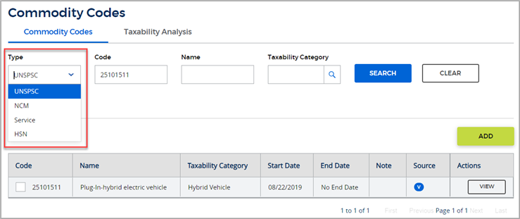

Commodity codes belong to standard classification systems and can be used by companies to classify products and services for various purposes. Your Vertex product supports commodity code classification systems that are used in various countries around the world. These systems are:
UNSPSC codes from the United Nations Standard Products and Services Code® taxonomy
NCM codes from the Brazilian Mercosul Common Nomenclature
Service codes from Brazilian federal legislation for the ISS tax
HSN codes from the Harmonized Commodity Description and Coding System
Vertex support for commodity codes
Vertex Tax Research maintains commodity codes that correspond to existing Vertex-defined taxability categories. These commodity codes are included in the O Series monthly data updates. You can use the Commodity Codes feature to search for commodity codes that are supported in Vertex data and then view the taxability of those codes.
For example, here is a search for UNSPSC code 25101511, which is mapped to the O Series
taxability category for Hybrid Vehicles:

When you have a good or service for which the commodity code is not defined in the O Series data updates, you have the following options:
You can add a commodity code in O Series and map it to an existing taxability category.
You can file a service request with your Vertex Customer Support representative to add support for that code. Vertex reviews the request and determines if data is available to support the code.
What you can do with commodity codes in O Series
When Vertex-supplied taxability data includes the commodity codes that apply to your products and services, you can pass transactions and the associated commodity codes from your financial system directly to O Series for tax determination. You do not need to set up taxability drivers and then map the drivers to taxability categories.
The O Series user interface provides tools for working with commodity codes so you can:
Review the taxability of a commodity code.
Add custom commodity codes.
Identify the commodity code used in a transaction.